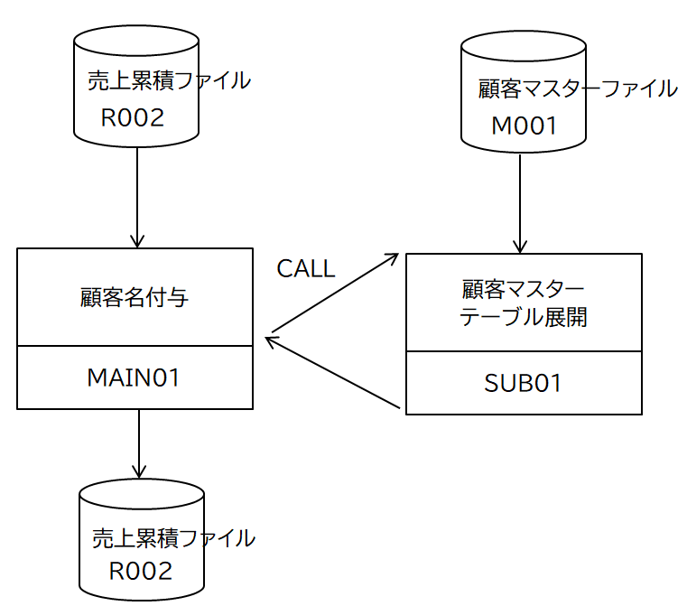

処理パターン(４) 外部サブプログラム呼ぶ
「処理パターン(３) テーブルの利用」におけるマスターファイルの読み込みをサブプログラムで行う。
機能仕様
サブプログラムで顧客マスターファイルを読み込み、顧客マスターテーブルを作成する。メインプログラムはサブプログラムから顧客マスターテーブルを取得する。
サブプログラムから戻り値を取得するには、メイン側で戻り値の領域を確保し、その参照を受け渡す方法をとる（いわゆる引数の参照渡し）。
CALL GIVING により得られる戻り値は、サブルーチンが変数 RERURN-CODE に代入する値であり、これは数値のみしか扱えないので、一般的にはコンディションコードとして利用する。RERURN-CODE はシステムで宣言されたグローバル変数である。
入出力構成図
ソースコード
メインプログラム
MAIN01.cbl
引数を指定してサブプログラムを呼び出す部分。サブプログラムが戻り値を設定する領域の参照渡を引数に指定する。
サブプログラム
SUB01.cbl
引数として受け取る領域は DATA DIVISION の LINKAGE SECTION に定義する。
PROCEDURE DIVISION宣言にUSING句で引数名を指定する。
参照渡しで渡された引数の領域に値をセットすれば呼び出し側で参照することができる。呼び出し側に戻るときは GOBACK文を実行する。
コンパイル・リンクの方法
静的リンク
一括してコンパイルする。
サブプログラムを別にコンパイルする。
動的（ダイナミック）リンク
共用オブジェクトを特定のフォルダにおく
詳細はここを参照